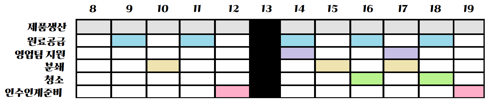
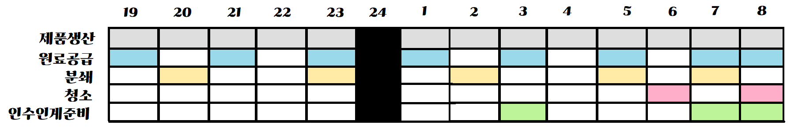
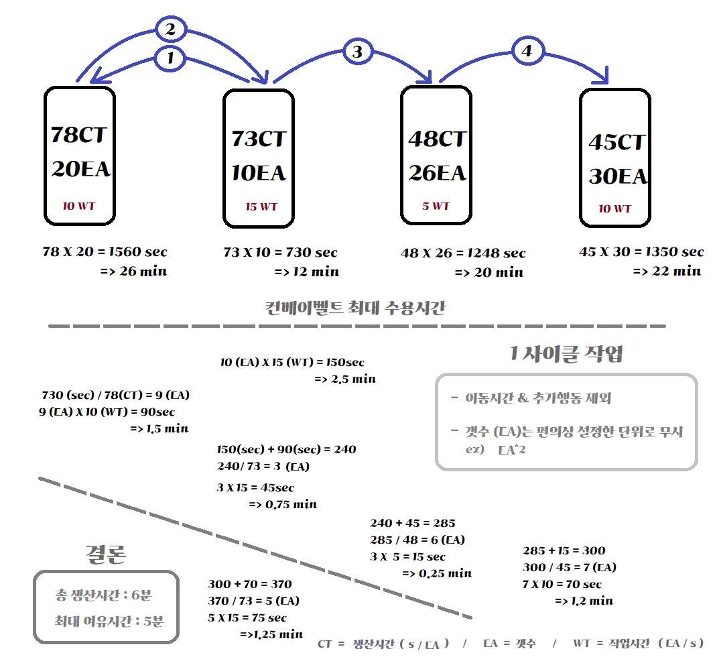
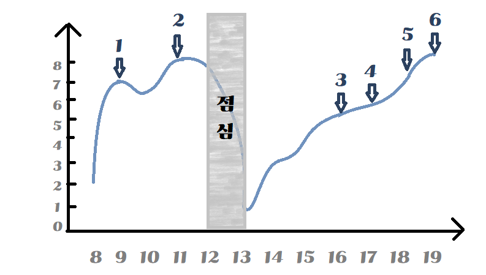

시간은 한정되어 있기 때문에 모든 작업은 우선순위에 따르는것이 중요합니다.
아래는 제가 생각하는 작업의 우선순위입니다.
조금 많이 어려워 보이지만, 그리 어려운 것은 아닙니다.
회사의 관리자들이 업무를 보는 시간이기 때문에 문제발생시 도움을 많이 받을 수 있습니다.
타 부서와의 업무변수가 있기 때문에 상대적으로 바쁩니다.
주간근무는 AM 8시 30분부터 PM 7시 30분까지 11시간동안 있으며
식사시간을 제외한 근무시간은 10시간입니다.
점심시간은 AM 12시, PM 1시로 나뉩니다.
점심 AM 12시는 1시 교대를 위한 일부 인원, 다른회사 사람들이 주로 갑니다.
점심 PM 1시는 나머지 인원, 주요 관리자들, 다른회사 사람 등 많은 사람들이 몰립니다.
점심 시간대를 선택할 수 있다면 AM 12시에 식사하러 가는 것을 추천드립니다.
회사의 관리자들이 업무를 보지 않는 시간이므로, 숙련공들이 업무를 합니다.
타 부서와의 업무변수가 없기 때문에 상대적으로 여유롭습니다.
주간근무보다 건조기 필터청소 등 다양한 업무를 추가적으로 수행합니다.
주간근무는 PM 7시 30분부터 AM 8시 30분까지 13시간동안 있으며
식사시간을 제외한 근무시간은 12시간입니다.
점심시간은 PM 12시, AM 1시로 나뉩니다.
점심은 식당이 아닌 2공장 경비사무실에서 식사합니다.
식사는 주간의 점심에 비해서 양이 적기 때문에 잘 배분해서 먹어야 합니다.
각 시간 대 별로 권장으로 하는 작업이 있으며,
1사이클동안 전체 제품을 포장하면 조금의 여유시간이 발생합니다.
아래는 2공장 다동에서 제가 작업하는 순서에 따른 여유시간을 계산하였습니다.
기본적인 흐름은 위의 그림과 같이 진행합니다.
시간대 별 컨디션 조절
업무를 하면서 시간대 별로 컨디션에 따라 낼 수 있는 체력(에너지)은 변합니다.
아래는 제가 작업을 통해 경험한 컨디션 변화입니다.
그래프 X축은 시간( Hour ), Y축은 체력( Energy )의 정도입니다. 그래프가 Y축이 높을수록 체력이 높아 작업 능률이 높아지기 때문에,
무거운 물건을 옮기거나 추가활동을 할 수 있습니다.
1 ~ 6의 포인트는 작업 시간 중 컨디션이 좋은 시점을 표현하였습니다.
저의 경우 각 시점별로 원료 보충, 분쇄, 청소, 인수인계 준비 등을 행동합니다.